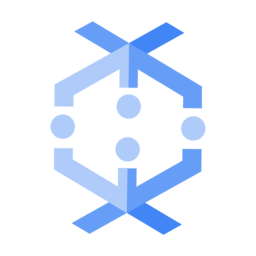

Domain 1: Agent Solutions
1.0 Domain 1 roadmap: Agent solutions (14% weight)
- Right-size the architecture (1.1): Use deterministic automation (Cloud Workflows / Workflow Builder) for fixed rules, a single agent for 1 domain with under 10 tools, and multi-agent only when complexity demands it.
- Pick the right platform and ingest multimodal data (1.2): Use Agent Designer for internal workforce bots with ACL-aware search, parse PDFs/tables/audio/video via multimodal data ingestion, and scale prototypes to code-first ADK.
- Master CES and CX Agent Studio mechanics (1.3): Align Playbooks, Flows, Pages, Intents, Transition Routes, and Event Handlers, steer voice with the 3-part composite voice model (Listener, Thinking, Speaker), and execute warm human handoffs.
Core architectural topics in Domain 1 (~14%)
- Evaluate when to use deterministic cloud automation (Cloud Workflows / Dataflow), no-code Gemini Enterprise Workflow Builder, a single LLM agent, or a multi-agent system.
- Structure agent reasoning using Chain-of-Thought (CoT) and few-shot prompt templates to reduce hallucinations before escalating to multi-agent complexity.
- Select between low-code Agent Designer (for internal workforce search and SaaS actions), CX Agent Studio, and code-first ADK.
- Design multimodal data ingestion pipelines (layout-aware PDF/table parsing, image/chart interpretation, and audio/video grounding) while enforcing source document ACLs.
- Bridge validated no-code prototypes into code-first ADK (reusing existing Agent Search data stores or delegating over A2A).
- Master how Generative Playbooks, Deterministic Flows, Pages, Form Parameters (Slots), Intents, Transition Routes, and Event Handlers are technically arranged.
- Configure omnichannel voice using CX Agent Studio’s 3-part composite voice model (Listener, Thinking, and Speaker models with Speaking style descriptions and inline
<pause>tags), barge-in, and redacted DTMF. - Trigger warm live-agent handoffs on negative sentiment or fallback caps, passing verified session parameters and an AI transcript summary to human reps.
Official syllabus and documentation references: View the Google Cloud Professional Agentic Architect Exam Guide (PDF) → and explore the Gemini Enterprise Agent Platform documentation →
1.1 Architecture trade-offs, Workflow Builder, and prompt reasoning
Rosku Bank’s new AI task force wants to build a 5-agent LLM system for every project in the bank:
 CSV → BigQuery Fixed data pipeline: For a nightly CSV-to-BigQuery ledger job with fixed columns and a sub-50ms SLA, their LLM agent racks up $4,000/day in token fees and hallucinates rounding numbers!
CSV → BigQuery Fixed data pipeline: For a nightly CSV-to-BigQuery ledger job with fixed columns and a sub-50ms SLA, their LLM agent racks up $4,000/day in token fees and hallucinates rounding numbers!- 💳 3 read-only APIs Simple FAQ bot: For a credit-card balance bot that only calls 3 read-only APIs, they build a 6-agent hierarchy that adds 9 seconds of slow handoff delay!
- 🧰 35 tools → 1 agent Overloaded monolith: Meanwhile, for a commercial loan system needing 35 distinct tools across legal, tax, and fraud departments, they cram all 35 tools into a single agent—confusing the LLM so it picks the wrong tools!
- Don’t use AI for fixed math or pipelines: If inputs are structured (JSON/CSV) and rules are 100% known in advance, use Cloud Workflows or Dataflow ($0 LLM token cost and millisecond speed).
- Need no-code task automation? Business users automating routine multi-app tasks (like summarizing an email and creating a Jira ticket) should use Gemini Enterprise Workflow Builder.
- Single agent before multi-agent: Use 1 single agent (enhanced with CoT and few-shot templates) when working in 1 domain with under 10 tools. Upgrade to a multi-agent system only when you hit 15+ tools, conflicting personas, parallel speedups, or separate security identities (PAB).




1. Key definitions: what each tier is and why you need it
- What it is: Code or YAML pipelines that run fixed API steps or high-volume data streams without an AI model.
- Why you need it: Delivers 100% predictable branching, sub-second speed, and $0 LLM token cost whenever inputs are structured and rules are fixed.
now- What it is: A visual, no-code automation builder inside Gemini Enterprise for business users.
- Why you need it: Lets non-developers chain event triggers, Gemini summarization steps, SaaS connectors (Jira, ServiceNow, Gmail), and human approval gates in minutes.
- What it is: One LLM agent handling open-ended natural-language requests inside one cohesive topic area.
- Why you need it: When you have under 10 clear tools and one security identity, a single agent gives the fastest response time and lowest token cost.
- What it is: Prompt instructions that tell a single agent to reason step-by-step (CoT) paired with 3–5 ideal input/output examples (few-shot).
- Why you need it: Fixes reasoning mistakes and tool-ordering errors inside a single agent without adding multi-agent complexity.
- What it is: A team of specialized agents that divide and conquer complex work.
- Why you need it: Essential when you hit tool overload (15+ tools), conflicting personas (Drafter vs. Critic), parallel fan-out speedups, or separate IAM/PAB security boundaries.
2. Interactive architecture decision engine
Click through the 3 modes below—notice how each mode adapts its stage count (4 gates for tier selection, 3 stages for Workflow Builder, and 3 stages for prompt reasoning templates):
3. Master architecture trade-off matrix
Compare the four automation and agent tiers across key design dimensions:
| Architectural dimension | |
|
|
|
|---|---|---|---|---|
| Input and task nature | Structured schemas (JSON/CSV) and 100% fixed mathematical/routing rules. | Repeatable trigger-based business tasks combining AI summaries + SaaS apps. | Unstructured natural language within 1 cohesive domain. | Complex, multi-domain goals requiring diverse specialized skills. |
| Optimal tool count | Fixed API steps (no dynamic LLM tool choice). | Visual sequence of pre-built enterprise connectors. | 1 to ~10 distinct tools with clear schemas. | 15+ tools partitioned into focused domain sub-agents. |
| Latency and token cost | Lowest latency (ms) and $0 LLM token cost. | Low cost; runs per triggered business event. | Low latency (1 LLM loop) and moderate token cost. | Higher token and handoff overhead (mitigated via Flash routers). |
| Service account per workflow or pipeline step. | Executes connectors under the user’s OAuth 2.0 permissions. | Single Agent Identity sufficient for all tools. | Distinct Agent Identities and PAB boundaries per specialist sub-agent. |
| Primary scenario trigger | “High-frequency structured ETL,” “strict sub-100ms SLA,” “fixed formula.” | “Business user automating email-to-Jira triage with human approval.” | “Customer FAQ + 4 account tools,” “minimize agent handoff latency.” | “30+ tools causing routing errors,” “Drafter + Critic,” “isolated PAB.” |
4. Real-world deep dive: hybrid pipelines, context pollution, CoT, and model tiering
| Architect question | Plain-English answer |
|---|---|
| + |
|
| 5 tools |
|
  |
|
| Flash 80%Pro 20% |
|
Always apply Occam’s Razor for agents:
- Tier 1–2 If no natural-language reasoning is needed → select deterministic automation (Cloud Workflows / Dataflow) or Gemini Enterprise Workflow Builder (for no-code multi-app tasks).
- Tier 3 If 1 cohesive persona with under 10 tools can solve it → select a single agent (optimized with Chain-of-Thought and few-shot templates).
- Tier 4 Only pay the orchestration cost of a multi-agent system when you hit tool overload (15+ tools), conflicting personas, parallel fan-out needs, or IAM/PAB isolation boundaries!
1.2 Agent Designer, multimodal ingestion, and the ADK scaling bridge
- Internal workforce assistant in days: Pick Agent Designer inside Gemini Enterprise when business analysts need a no-code employee assistant grounded on SharePoint/Drive with automatic document ACL enforcement and pre-built SaaS action connectors.
- Multimodal data ingestion: Use layout-aware document parsing and multimodal embeddings to ingest complex PDFs (tables, charts, diagrams), images, and audio/video files without losing structural context.
- The Agent Designer → ADK bridge: Upgrade a no-code prototype to custom Python ADK when you need code callbacks, parallel/loop workflows, or Git CI/CD—while plugging into the exact same Agent Search database you already built (or linking the two bots via A2A)!
1. Key definitions: what each capability is and why you need it
- What it is: A visual, no-code studio for building internal employee assistants.
- Why you need it: Lets business analysts launch internal bots grounded on company files and SaaS apps in days without writing Python or managing containers.
- What it is: Enterprise search that indexes SharePoint, Drive, and Confluence files alongside their read permissions (ACLs).
- Why you need it: Automatically checks the logged-in employee’s identity at query time so restricted executive files are never retrieved or leaked.
- What it is: An ingestion pipeline that parses PDF tables, visual charts, images, and audio/video transcripts into one shared search index.
- Why you need it: Keeps multi-column PDF tables intact (instead of slicing rows in half) and lets users search across text, diagrams, and videos with exact page/timestamp citations.
- What it is: Turnkey integrations with enterprise SaaS applications inside Agent Designer.
- Why you need it: Uses per-user OAuth 2.0 consent so every ticket creation or calendar update runs strictly under that employee’s personal permissions.
- What it is: The upgrade path from a no-code Agent Designer prototype to code-first Python ADK.
- Why you need it: Lets engineers add Python callbacks and Git CI/CD while plugging into the exact same Agent Search database (zero re-indexing!) or delegating behind the scenes via A2A.
2. Interactive explorer: Agent Designer, multimodal ingestion, and the ADK bridge
Click through the 4 modes below—notice how each mode dynamically adjusts its stage count (3 stages for Agent Designer, 4 stages for multimodal ingestion, 3 stages for the ADK bridge, and 2 gates for platform selection):
3. Platform selection and multimodal ingestion matrix
| Architectural dimension | Agent Designer (Gemini Enterprise Studio) | CX Agent Studio (CES) (omnichannel contact center) | Code-first ADK (+ scaling bridge) |
|---|---|---|---|
| Primary builder persona | Business analysts, IT admins, and product managers (no/low-code). | Conversational UX designers and contact-center operations teams. | Cross-functional teams: analysts prototype in Studio; engineers scale in Python/Java ADK. |
| Target users and channels | Internal employees via Gemini Enterprise web app and Google Workspace. | External customers via voice telephony (PSTN/SIP), web chat, mobile, and SMS. | Custom APIs, headless backend event pipelines, or complex multi-agent fleets. |
| Multimodal and search grounding | Turnkey Agent Search with automatic document ACLs and layout-aware PDF/table parsing. | Grounded data stores + OpenAPI tools + multimodal customer attachments. | Full programmatic control over Agent Search (data_store_id), RAG Engine, and Context Caching. |
| How the scaling bridge works | Rapidly validates prompts and data stores in days with zero code. | Can invoke remote ADK specialists via A2A or webhooks. | Reuses the exact same Agent Search data_store_id without re-indexing, or connects behind Studio via A2A! |
| Primary scenario trigger | “Business analysts,” “internal employee assistant,” “SharePoint/Jira connectors in days.” | “Inbound voice calls,” “IVR replacement,” “barge-in,” “live contact-center warm transfer.” | “Prototype validated in Agent Designer now requires custom Python callbacks / parallel workflows / Git CI/CD.” |
4. Real-world deep dive: multimodal grounding, data store reuse, hybrid A2A, and ACLs
| Architect question | Plain-English answer |
|---|---|
| “How do we stop PDF financial tables from getting sliced mid-row during ingestion, and how do we ground an agent on embedded charts or training videos?” |
|
| “When we upgrade our prototype from no-code Agent Designer to code-first Python ADK, do we have to re-upload and re-chunk our 50,000 SharePoint documents?” |
|
| “What if non-technical HR analysts want to keep managing the front-door employee assistant in Agent Designer, while software engineers need to add a complex multi-step payroll tax calculator built in ADK?” |
|
| “How does an Agent Designer assistant prevent a junior employee from reading restricted executive M&A folders stored in the same Google Drive data store?” |
|
1.3 CX Agent Studio (CES): Playbooks, state-machine Pages, and composite voice
- Hybrid orchestration: Use Generative Playbooks (steered by few-shot Exemplars) for open-ended conversation and tool calls, and transition to Deterministic Flows for strict step-by-step KYC/PCI verification and word-for-word legal disclosures.
- How Flows are built: A Flow contains state-machine Pages. Each Page collects Form Parameters (Slots), evaluates Intents and Condition Transition Routes to move to the next Page, and uses Event Handlers (
no-match,no-input, webhook errors) to handle fallbacks. - Modern composite voice architecture: CX Agent Studio uses a 3-part composite voice model (Listener, Thinking, and Speaker models) steered by natural-language Speaking style descriptions and inline angle-bracket tags (like
<pause>) alongside barge-in and redacted DTMF keypad input.
1. Key definitions and how Playbooks, Flows, Pages, Intents, and Event Handlers align
- What it is: An LLM-driven conversational unit defined by natural-language goals, instructions, and OpenAPI/data store tools.
- Why you need it: Handles flexible, multi-intent customer questions. Adding Exemplars (sample conversations) teaches the Playbook the exact order to call tools without writing Python code.
- What it is: A Flow is a strict state machine made of Pages. Each Page represents one step (e.g.,
Verify_KYC_Page) and holds required Form Parameters (Slots). - Why you need it: Guarantees that mandatory fields (like card number, birth date, and PIN) are collected in an exact, unskippable sequence.
- What it is: An Intent recognizes what the user wants. A Transition Route checks if an Intent matched or a condition is true (e.g.,
$page.params.status = ‘FINAL’) to move to the next Page. - Why you need it: Controls normal step-by-step movement across Pages, Flows, and Playbooks.
- What it is: Error catchers attached to a Page or Flow for unrecognized speech (
sys.no-match-default), caller silence (sys.no-input-default), or API failures. - Why you need it: Lets you re-prompt the user up to a fixed limit (e.g., 2 retries) and then escalate cleanly to a human representative.
- What it is: CX Agent Studio’s voice engine combining a Listener model (barge-in/turn-taking), Thinking model, and Speaker model.
- Why you need it: Lets you steer voice tone, pacing, and digit reading using short Speaking style descriptions and inline tags like
<pause>instead of complex XML code.
- What it is: DTMF captures phone keypad digits with log redaction; warm handoff transfers callers to human reps with session params and an AI summary.
- Why you need it: Protects PCI card numbers in logs and ensures frustrated callers never have to repeat their story to a human agent.
- Top level (hybrid orchestration): A Generative Playbook handles open-ended triage and transitions to a Deterministic Flow whenever strict compliance or slot-filling is needed (sharing parameters via the session parameter store).
- Inside a Flow (the state machine):
Flow→ contains multiplePages(states). - Inside a Page (3 evaluation pillars): Each active
Pageevaluates: (1) Form Parameters (Slots) to collect required inputs in order, (2) Transition Routes (triggered by Intents, boolean parameter Conditions, or both) to transition to the next Page/Playbook, and (3) Event Handlers (no-match,no-input, webhook failure) to handle errors and bound retries!
2. Interactive CX Agent Studio explorer
Click through the 3 modes below—notice how Mode 1 has 5 stages (tracing the exact Playbook -> Flow -> Page -> Route -> Event Handler hierarchy), Mode 2 has 4 stages (composite voice and DTMF), and Mode 3 has 3 stages (warm escalation):
3. Visual decision matrix: Deterministic Flows vs. Generative Playbooks
| Architectural dimension | Deterministic Flows (Pages, Routes, and Event Handlers) | Generative Playbooks (goal-driven LLM + Exemplars) | Hybrid (Playbook + Flow together) |
|---|---|---|---|
| Core building blocks | Pages (states), Form Parameters (slots), Transition Routes (Intents/Conditions), and Event Handlers (no-match/no-input). |
Natural-language goal, instructions, tool definitions (OpenAPI / data stores), and Exemplars. | Playbook handles open-ended dialogue and transitions to a Flow for strict compliance gates. |
| Control and repeatability | 100% deterministic: Enforces exact slot-collection order and verbatim static disclosures. | Dynamic and reasoning-based: Adapts to compound questions and multi-tool synthesis. | Best of both worlds: Conversational flexibility + guaranteed state-machine gates. |
| Few-shot steering | Uses training phrases on intent routes. | Uses Exemplars (example multi-turn conversations showing ideal tool use and tone). | Exemplars teach the Playbook when to transition to the Deterministic Flow! |
| Primary scenario trigger | “Collect PCI/KYC fields in exact order,” “DTMF PIN entry,” “verbatim legal disclaimer.” | “Troubleshoot open-ended product issues,” “steer tool sequence with Exemplars.” | “Conversational banking bot that must enforce strict KYC verification before wiring money.” |
4. Real-world deep dive: state-machine mechanics, Exemplars, and composite voice UX
| Architect question | Plain-English answer |
|---|---|
“How do we stop a Deterministic Flow from re-asking for account_id if the customer already gave it to the Generative Playbook?” |
|
“What if a Generative Playbook calls generate_payoff_letter before calling check_loan_payoff? How do we fix the tool order without writing Python code?” |
|
| “What is the difference between a Transition Route and an Event Handler on a Page?” |
|
| “How does CX Agent Studio’s 3-part composite voice model improve upon legacy SSML tags?” |
|
1.4 Section 1 master takeaway: architecture, multimodal, and CX Studio summary
- Review the 4-pitfall solution architect switcher, 4-pillar summary grid, and master decision matrix below right before launching the Section 1 practice questions!
- Hover your mouse over any dotted abbreviation (like CES, DTMF, ACL, or CoT) for an instant definition.
1. Interactive solution architect switcher: top 4 Section 1 pitfalls
Click each pitfall tab below to compare naive design mistakes against the recommended Google Cloud architecture in scannable bullet points:
2. The 4-pillar Section 1 summary grid
- Workflows/Dataflow: Fixed schemas.
- Workflow Builder: No-code app tasks.
- Single agent (+ CoT): 1 domain, <10 tools.
- Multi-agent: 15+ tools, personas, parallel, or PAB.
- Agent Designer: Internal workforce + Agent Search ACLs + OAuth connectors.
- Bridge to ADK: Reuse
data_store_idor delegate behind the scenes via A2A.
- Layout parser: Keeps PDF tables and headers intact.
- Multimodal embeddings: Grounds on visual charts, images, and audio/video timestamps.
- Hierarchy: Playbook ↔ Flow → Page (Slots + Transition Routes + Event Handlers).
- Voice: Listener + Thinking + Speaker (Speaking style &
<pause>), DTMF, and warm handoff.
3. Master architecture decision matrix (Section 1)
| Scenario or requirement | Recommended Google Cloud solution | Why it works best |
|---|---|---|
| Process structured events or CSV rows using fixed mathematical rules under sub-100ms latency | Cloud Workflows / Eventarc / Dataflow (deterministic automation) | Zero LLM token cost, sub-second execution, and 100% deterministic repeatability. |
| Let business users automate a repeatable email-to-Jira workflow with a human approval gate | Gemini Enterprise Workflow Builder | No-code visual canvas chaining triggers, Gemini steps, and SaaS connectors. |
| Build a conversational bot for 1 domain with 5 read-only tools and lowest LLM latency | Single-agent architecture (enhanced with Chain-of-Thought (CoT) and few-shot templates) | Avoids multi-agent routing latency and extra token overhead while steering step-by-step reasoning within one turn. |
| Resolve tool-selection errors in a single agent overloaded with 30+ cross-department tools | Multi-agent system (Coordinator + domain specialist sub-agents) | Partitioning tools into small, domain-specific sub-agents restores high tool-selection accuracy. |
| Let business analysts launch an internal employee assistant grounded on SharePoint/Drive in days | Agent Designer (with Agent Search ACLs and pre-built action connectors) | Turnkey no-code studio with automatic query-time document permission filtering and per-user OAuth 2.0 consent. |
| Ingest complex PDFs with multi-column tables, visual charts, and recorded inspection videos | Multimodal data ingestion (layout parser + multimodal embeddings) | Preserves table row/header structure and indexes visual diagrams and video timestamps with citations. |
Add Python before_tool_callback, ParallelAgent, or Git CI/CD gates to an Agent Designer prototype |
Cross the Agent Designer → ADK bridge (or delegate from Agent Designer to ADK over A2A) | Reuses the existing Agent Search data_store_id without re-indexing any documents while unlocking full code control. |
| Enforce strict step-by-step KYC slot collection and verbatim legal notices in a contact-center bot | CX Agent Studio hybrid: Generative Playbook + Deterministic Flow Page | Playbooks handle flexible triage; Flow Pages enforce slot order, Transition Routes, and Event Handlers. |
| Fix a Generative Playbook that calls tools in the wrong order without writing Python code | Add Exemplars (few-shot example conversations) to the Playbook | Exemplars steer Playbook tool selection, argument formatting, and sequence declaratively in CX Agent Studio. |
| Control natural voice pacing, alphanumeric reading, barge-in, and keypad PCI entry on phone calls | CX Agent Studio composite voice (Listener/Thinking/Speaker + <pause> + redacted DTMF) |
Steers voice via natural Speaking style descriptions and inline tags while redacting sensitive keypad digits in logs. |
| Transfer a frustrated caller to a human contact-center rep without making them repeat details | Warm live-agent handoff with session params + AI summary + Agent Assist | Passes verified identity slots and an AI-generated transcript brief directly to the human rep’s desktop. |